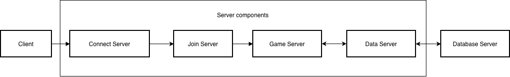

Understand the server architecture
MuOnline's server architecture separates connection handling, authentication, data management, and game logic into distinct services. The following diagram illustrates connection and data flow in a typical game session:

When you start the client:
- The client establishes a connection to the Connect Server. The Connect Server validates the client and forwards it to the Join Server.
- The Join Server checks the provided login credentials against the database and forwards the client to the Game Server.
- The Game Server requests character information from the Data Server and the player loads into the game world.
After login, the Game Server continuously communicates with the Data Server to update character and world data while the client remains connected.
This distributed architecture provides several benefits:
- Security - The database is not exposed to the Internet. It's accessed only by two components, for two distinct purposes: the Join Server validates account credentials, and the Data Server handles game data.
- Availability - If one component stops working, the others continue operating independently.
- Performance - Separating SQL operations from game logic helps the Game Server run faster and remain stable.
- Maintenance - Having modular components simplifies troubleshooting, monitoring, and scaling.